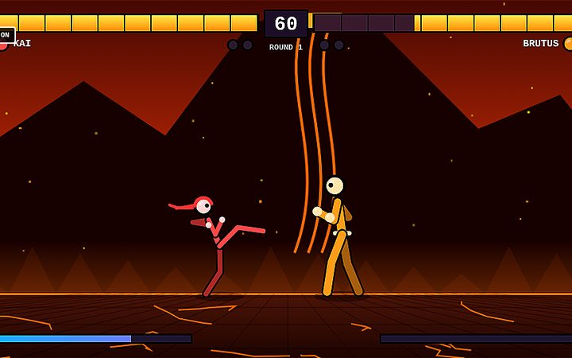

Stick Fury
FIGHTING • 1-2 PLAYERS
The ultimate stick-figure fighting game: 8 fighters and a demon boss, combos, juggles, throws, fireballs and cinematic super moves across 7 stages. Arcade, 2-player versus and training.
▶ PLAY Stick Fury NOWStick Fury is one of 107 free retro games on Retro World. It runs right in your browser on phone, tablet, PC or TV — no download or account needed, and your progress saves on your device.